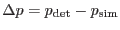
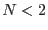
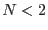

These are not so much histograms as binned averages of various position-related quantities at a series of values of detected flux. This pair of histograms is written to tables X_VS_S and Y_VS_S in the output data set.
Log10 of the flux values are taken before the binning process is begun.
A description of the columns written (taking again the  spatial coordinate as the example) is as follows:
spatial coordinate as the example) is as follows:
where
 and  is the number of values within the bin.
is the number of values within the bin.  is of course undefined for .
is of course undefined for .